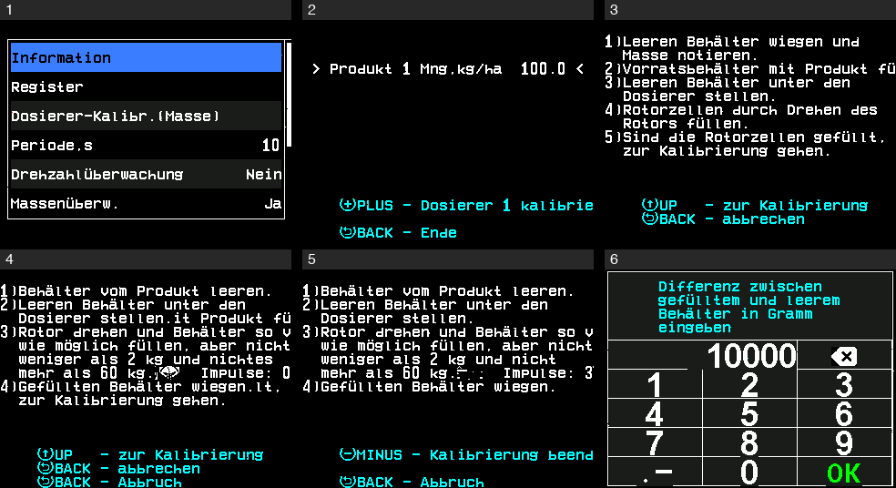

Dosierer nach Gewicht kalibrieren
Lassen Sie den Dosierer in einen Behälter laufen und wiegen Sie ihn, damit der Hectare Mini weiß, wie viel Produkt eine Wellenumdrehung ausbringt – nötig für die „Massenüberw.“.
Mit „Massenüberw.“ auf „Ja“ zählt das Panel das ausgebrachte Produkt aus den Umdrehungen der Dosierwelle (Dosierwellensensor). Die Kalibrierung misst das Gewicht je Impuls und schreibt „Masse, g“ und „Masse, Impulse“. Sie wird auf der Ebene „Fahrer“ im Stand durchgeführt.
Sie brauchen einen Behälter, eine Waage und eine Möglichkeit, die Dosierwelle von Hand zu drehen.
Halten Sie auf dem Startbildschirm „MENU“ gedrückt, wählen Sie den Dosierersensor und drücken Sie „MENU“. Das Kontextmenü öffnet sich.
Wählen Sie „Dosierer-Kalibr.(Masse)“ und drücken Sie „MENU“. Der Kalibrierbildschirm zeigt die Sollmengen der verwendeten Produkte – das Produkt dieses Dosierers zwischen Pfeilen – und „PLUS - Dosierer 1 kalibrieren“ mit der Nummer des Dosierers.
Drücken Sie „PLUS“. Das Panel listet auf, was vor der Kalibrierung zu tun ist: den leeren Behälter wiegen und das Gewicht notieren; den Behälter füllen; den leeren Behälter unter den Dosierer stellen; den Rotor drehen, bis seine Zellen gefüllt sind. Erledigen Sie alles und drücken Sie dann „UP“.
Der nächste Bildschirm listet die Kalibrierung selbst auf und zählt die „Impulse“ vom Sensor: Leeren Sie den Behälter, stellen Sie ihn wieder unter den Dosierer und drehen Sie den Rotor, sodass der Behälter sich füllt – möglichst viel, zwischen 2 kg und 60 kg.
Sobald mehr als zehn Impulse gezählt sind, erscheint die Zeile „MINUS - Kalibrierung beenden“. Drehen Sie weiter, bis der Behälter so viel enthält, wie Sie schaffen – mindestens 100 Impulse und 5 kg ergeben ein gutes Ergebnis. Hören Sie dann auf.
Drücken Sie „MINUS“. Das Zahlenfeld öffnet sich: „Differenz zwischen gefülltem und leerem Behälter in Gramm eingeben“.
Wiegen Sie den vollen Behälter, ziehen Sie das Leergewicht ab, geben Sie die Differenz in Gramm ein (2000 bis 60000) und berühren Sie „OK“. Das Panel speichert die Werte und kehrt zum ersten Bildschirm zurück.
Drücken Sie „BACK“, um zu verlassen.

„BACK“ auf der Liste vor der Kalibrierung bricht sie ab. „BACK“ während der Kalibrierung fragt „Sind Sie sicher?“ – „PLUS“ bricht ab, „MINUS“ macht weiter. „BACK“ auf dem Zahlenfeld behält die alten Werte.
Wenn sie nicht startet oder stoppt
„PLUS“ in Schritt 3 funktioniert nur, solange der Sensor überwacht wird, antwortet und keinen Alarm hat. Sonst nennt der erste Bildschirm den Grund – „Nicht überwacht“, „Keine Verbindung“ oder „ALARM“. Fällt der Sensor während der Kalibrierung aus, zeigt das Panel „ALARM“ mit dem Grund; „BACK“ führt zum ersten Bildschirm zurück.
Ihre Maschine tut etwas, das diese Seite nicht beantwortet? Schreiben Sie an support@agriwelt.com — es antwortet ein Ingenieur.